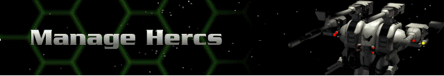
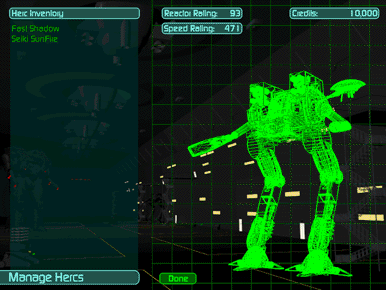

› |
› |
› |
Manage Hercs |

There are (eventually) eight types of Hercs. Each one can be configured differently with different weapons, armor, drives, reactors, batteries, computers, shields, sensors, mining equipment, life support systems, and other devices. Click on the Herc you want to configure. From here, you can change or add weapons and devices. Click on any existing weapon, device, or Empty slot to see a list of other components that can be mounted there. Then click on any component name for its description. An important element of each description is how that component will affect the Herc’s Speed Rating (its ability to move quickly).
 |
Each component also has a price. A negative price means that component has less value than what is already mounted to that particular hard point. A negative price will return that amount to your credit pool if purchased. This is also where you repair Hercs that have sustained battle damage. After you have selected a Herc, click on the Repair button and you will see options to repair only the Herc highlighted or the entire fleet. Choose what you can afford. Partial repairs can also be made while on the Battlefield if your Herc has a repair device mounted. You can rename any Herc by clicking on its name in this screen (after you have first selected it). |